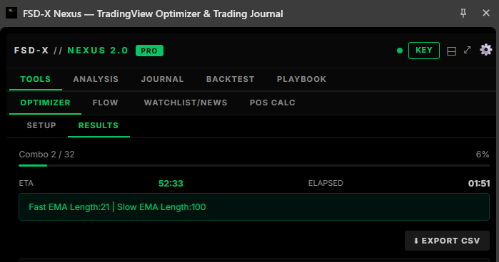
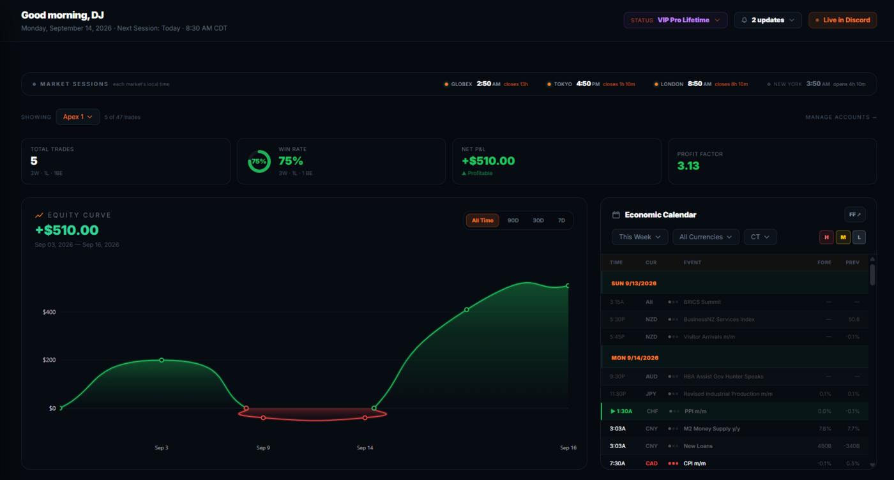
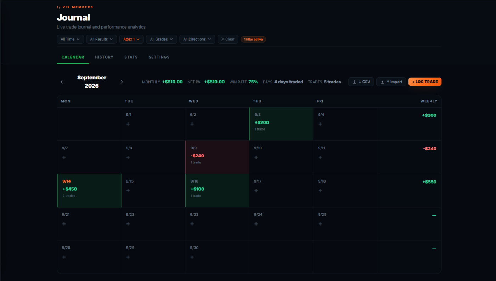
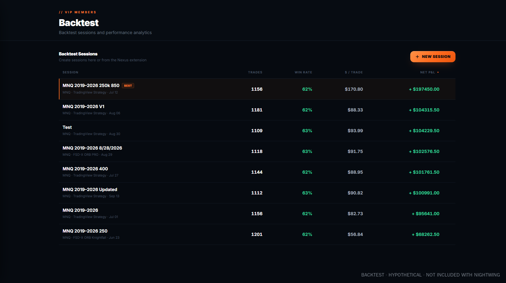
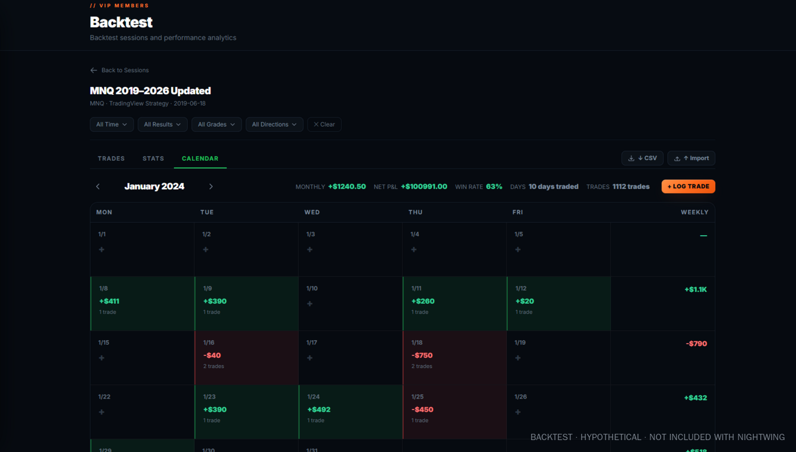
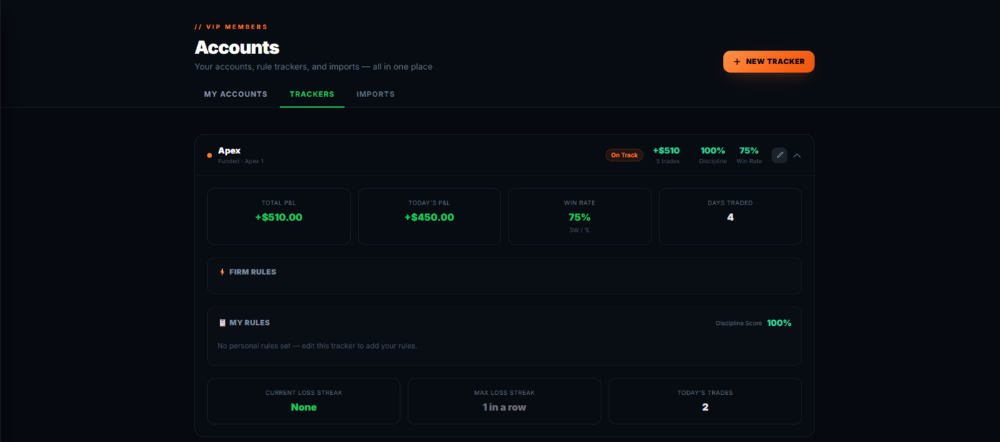
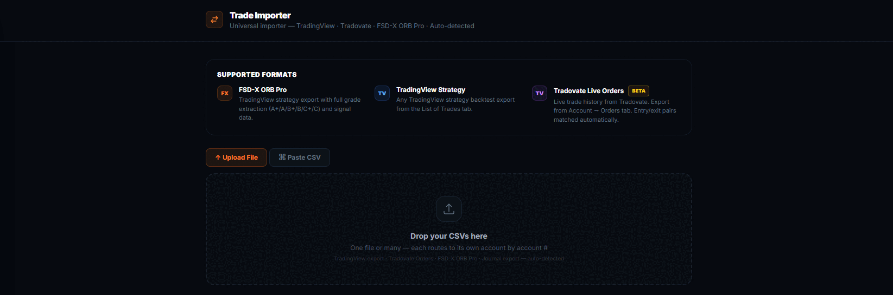
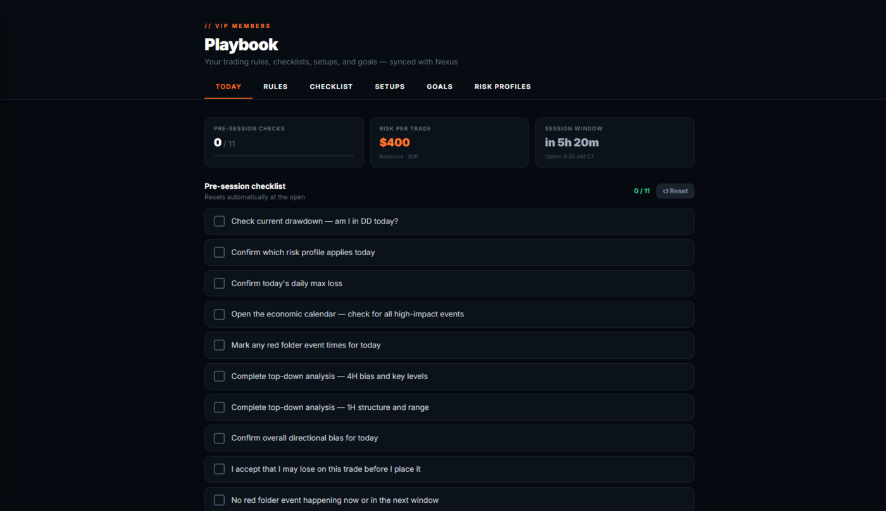
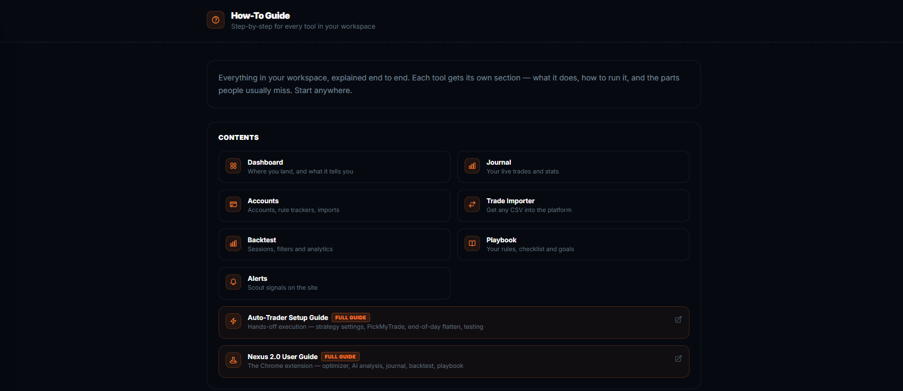

The tools, without the system
Nexus sits on your TradingView chart while you trade — position sizing, the economic calendar, chart analysis, trade logging. The member platform holds the record afterwards — journal, backtests, broker imports, prop account tracking. You take your own entries. These are the tools around them.
Longer terms work out to $8.33/month. Cancel anytime.
Two halves of one workflow. Nexus rides along on the TradingView chart while you trade. The site holds the record afterwards. One subscription covers both, and they share the same journal, playbook and backtests.
Nightwing gives you nothing to put on a chart — that's deliberate, and it's who this tier is for. If you want levels drawn for you, Raven adds the ORB indicator on top of everything here, and the full membership adds the graded system. Nexus and the platform are the same software on all three. Compare them →
Pick a prop firm, set trailing or end-of-day drawdown, and run your own trade history against that rule set to see where it would have broken. Filter by grade, chart the contract sizing, export to CSV or PDF.
Slice your trades by grade, direction, opening range size and day count. See which bucket carries the record and which one gives it back, with streaks and a written breakdown. Export to CSV or PDF.
Both read a CSV, your journal, or a screenshot of your trade history — so a broker that won't give you a clean export isn't a blocker. Both are historical analysis of trades that already happened. Neither predicts future results, and neither is financial advice.
All of that is part of the FSD-X membership. Nightwing is a separate, cheaper product — not a cut-down membership.
It is not a position size calculator with extras
Nexus is five tools in a side panel that sits against the TradingView chart. Most of it has nothing to do with our indicators — it works on whatever you happen to be trading.

The panel docks to the right of the TradingView chart and stays there while you work. Above, the Optimizer part-way through a sweep — it reports the combination it is on, how far through it is and how long is left, and can be stopped at any point.
Open any TradingView strategy's settings dialog and Nexus reads its inputs straight off the screen. Give each one a minimum, a maximum and a step, run the sweep, and read the combinations back ranked. It is not limited to our scripts — it optimises whatever strategy is on your chart.
Presets for Apex, TopStep, MFF and E8, or set your own account size, daily drawdown, trailing or end-of-day drawdown and profit target. Feed it your journal and it simulates the evaluation, including how the result changes with contract count.
Simulated outcomes from your own past trades. Hypothetical, and not a prediction that any evaluation will pass.
Drop in your entry, confirmation and trend charts and get them read as one picture, with your ticker, strategy and maximum risk as context. It is AI-assisted and it says so in the panel — a second opinion to argue with, not an instruction.
Position calculator for futures and forex, micro or standard, sized off your stop to a target R:R. Plus a watchlist scanner, news headlines, an economic calendar and an options flow reader.
Log a trade without leaving the chart — entry, exit, stop, both targets, tags, notes and a screenshot. Then history and stats: win rate, net P&L, long versus short, performance by day, drawdown from peak. Export to CSV or PDF.
Upload a CSV, keep each run as its own session, and read the results back the same way you read your live record. Sessions sync with the backtest workspace on this site.
Your rules, setups and goals, plus a pre-trade checklist you tick off before entering. Daily rules and drawdown-protection rules live here too, and all of it syncs with the playbook on this site.
The panel and the site are one account, not two
This is the difference between Nexus and every other browser extension you have tried. It is not a standalone tool that happens to share a login — it reads and writes the same data as the platform on this site, both directions, automatically.
Log a trade in the panel while the chart is still in front of you, and it is in your journal on this site before you have closed the tab.
Upload a backtest CSV on the site and the session is there in the panel's Backtest tab, ready to read against the chart.
Your playbook is one list. Rules, setups, goals and the pre-session checklist — tick something off in the panel and the site knows.
Accounts and defaults follow you. Tracked accounts, your usual ticker, timeframe and contract count are set once and apply in both places.
Which is why buying one without the other would not make sense — and why they are never sold apart.
This is the actual workspace, not a mockup. Pick a tool to see it.








Dashboard and journal — sample data. Those screens come from a demo account with placeholder trades entered by hand, so the tools have wins and losses to display. They are not real trades and not anyone's account.
Backtest screens — hypothetical results. Those show a real backtest CSV imported into the workspace, which is what the importer is for. Backtested results are hypothetical, carry no risk, and do not reflect commissions, fees or slippage. Past performance is not indicative of future results, and no figure shown here is included with Nightwing — you import your own.
Nightwing records and analyses trading. It does not produce it.
Then $9.99 per month. Cancel anytime before the trial ends and you're not charged.
Billed every 3 months. No free trial on this plan — billing starts immediately.
Billed every 6 months. No free trial on this plan — billing starts immediately.
Billed once a year. No free trial on this plan — billing starts immediately.
Just subscribed? Follow the Getting Started guide → to create your site account and activate Nexus.
Not ready to pay for anything yet? Arkham ORB is free on TradingView — same opening-range framework, no account needed.
No. Nightwing is the platform and Nexus only. ORB PRO (Knightfall MK2) and the rest of the indicator suite are part of the FSD-X membership.
Yes. The backtest workspace takes any backtest CSV you import — it is not tied to our scripts. Same for the journal and the trade importer, which read your broker's own exports.
No. SCOUT is part of the membership. It is the one part of the member platform Nightwing does not open.
Only the $9.99 monthly plan, which includes 7 days free. The 3-month, 6-month and annual plans bill immediately.
Yes, any time, through Whop. Your journal, accounts and backtest history stay with your site account.
No. Everything here is educational, rules-based software. It records and analyses your own trading — it does not tell you what to trade, and no outcome is guaranteed. See the Disclosures.